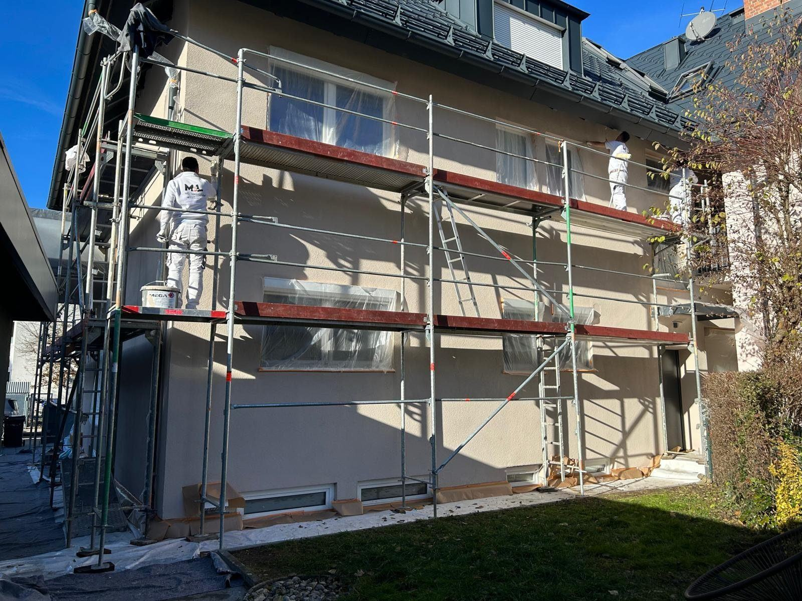

Fassadenanstriche
Wir besprechen Farbtöne und geeignete Anstriche passend zum Gebäude und vorhandenen Untergrund. So entsteht eine stimmige Außenansicht.
MEL MALER · FASSADENARBEITEN
Die Fassade gibt Ihrem Haus sein Gesicht. Mit abgestimmten Farben und sorgfältiger Vorbereitung bringen wir die Außenflächen wieder zur Geltung.
Fassadenarbeiten anfragen ↗
WAS WIR FÜR SIE TUN
Wir stimmen die Arbeiten auf Ihre Räume, Ihre Wünsche und die Gegebenheiten vor Ort ab.
Wir besprechen Farbtöne und geeignete Anstriche passend zum Gebäude und vorhandenen Untergrund. So entsteht eine stimmige Außenansicht.
Lose Stellen, Verschmutzungen oder schadhafte Bereiche müssen vor einem neuen Anstrich beurteilt werden. Notwendige Reinigungs- und Ausbesserungsarbeiten stimmen wir ab.
Sockel, Fensteranschlüsse und schwer erreichbare Flächen gehören zur Planung dazu. Zugang, Gerüstbedarf und Witterung werden berücksichtigt.
Die Fassade ist die Visitenkarte eines Hauses. Wir beraten Sie zu Farbtönen, die zu Dach, Fenstern und Umgebung passen.
Ein intakter Anstrich schützt den Putz vor Feuchtigkeit. Risse und kleinere Schäden bessern wir vor dem Streichen aus.
Sicherer Stand, abgedeckte Fenster und Pflanzen und eine gründliche Reinigung sind die Basis für ein gutes Ergebnis.
GUT ZU WISSEN
Tippen oder zeigen Sie auf die Punkte am Haus. Die Werte sind typische Richtwerte für ein unsaniertes Einfamilienhaus – jedes Gebäude ist anders.
INTERAKTIVHEIZKOSTEN-SPARRECHNER
Stellen Sie Fläche, Baujahr und Dämmstärke ein – das Haus zeigt live, wie viel Wärme über die Außenwand verloren geht. Welche Maßnahme für Ihre Fassade sinnvoll ist, besprechen wir gern mit Ihnen.
Überschlägige Schätzung nur für die Außenwand, nach dem vereinfachten Heizperiodenverfahren (66 kKh/a), mit typischen U-Werten je Baualter und einer Dämmung mit λ = 0,035 W/(mK). Tatsächliche Einsparungen hängen von Gebäude, Heizung und Nutzung ab. Ersetzt keine Energieberatung. Für Dämmmaßnahmen gibt es staatliche Förderprogramme – die aktuellen Konditionen klären Sie am besten mit einer Energieberatung.
Ergebnis als Anfrage übernehmen ↗AUS UNSEREN PROJEKTEN
Einblicke in Fassadenarbeiten von MEL – von der Vorbereitung bis zum fertigen Anstrich.
SO LÄUFT ES AB
Wir sehen uns Putz, Untergrund und vorhandene Schäden an und besprechen Ihre Farbwünsche.
Gerüst stellen, Fenster, Türen und Pflanzen schützen.
Verschmutzungen entfernen, Risse und Fehlstellen fachgerecht ausbessern.
Passende Grundierung und Fassadenfarbe in mehreren Arbeitsgängen – bei geeignetem Wetter.
GUT VORBEREITET
Fotos aller betroffenen Seiten, Angaben zur Gebäudehöhe und Hinweise auf sichtbare Schäden helfen bei der Anfrage. Größere Risse oder Feuchtigkeitsprobleme müssen vor einem Anstrich genauer beurteilt werden.
Den genauen Umfang und die Kosten klären wir nach der Besprechung Ihres Vorhabens. Sie müssen zum ersten Kontakt noch nicht alle Details kennen.
Vorhaben besprechen ↗HÄUFIGE FRAGEN
Geeignete Temperaturen und eine passende Witterung sind wichtig. Der Zeitpunkt hängt vom Material und den Bedingungen vor Ort ab; die Ausführung wird entsprechend geplant.
Das hängt von Höhe, Erreichbarkeit und Umfang der Arbeiten ab. Wir klären im Vorfeld, welcher sichere Zugang erforderlich ist.
Nicht unbedingt. Erst muss beurteilt werden, weshalb Risse entstanden sind. Je nach Ursache können vor dem Anstrich weitere Untersuchungen oder Maßnahmen erforderlich sein.
Ideal sind trockene Tage mit gemäßigten Temperaturen – meist zwischen Frühjahr und Herbst. Frost, starke Hitze oder Regen sind ungünstig.
Ein Anstrich schützt die Fassade und erhält ihren Wert, spart aber kaum Heizenergie. Deutliche Einsparungen bringt eine Dämmung – der Rechner oben zeigt das Potenzial.
DER NÄCHSTE SCHRITT